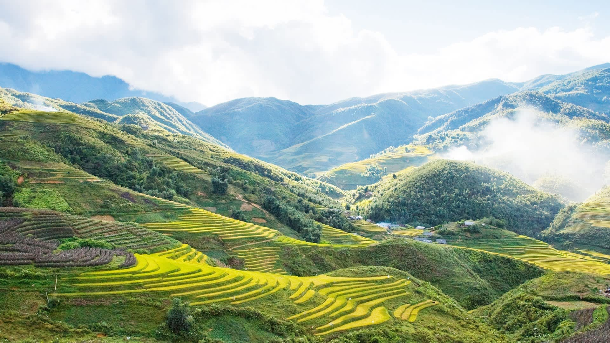

Giá từ: 3.590.000đ/người
🚗 Sapa – viên ngọc ẩn mình giữa đại ngàn Tây Bắc – là bức tranh giao hòa giữa mây trời và đất núi.
Con đường đèo uốn lượn dẫn lên thị trấn như dải lụa mềm, mở ra khung cảnh hùng vĩ của ruộng bậc thang tầng tầng lớp lớp,
nơi sắc vàng mùa lúa chín quyện cùng sương mờ bảng lảng.
Đặt chân tới đây, bạn sẽ cảm nhận được hơi thở của núi rừng, làn gió se lạnh pha mùi cỏ dại và tiếng khèn Mông vang vọng giữa thung lũng.
Chinh phục đỉnh Fansipan – nóc nhà Đông Dương – là khoảnh khắc khó quên khi bạn đứng giữa biển mây, phóng tầm mắt ra muôn trùng non nước.
Đêm Sapa ấm áp với phiên chợ tình, khói lam chiều quyện mùi thịt nướng và rượu ngô, khiến lòng người say không chỉ vì men mà còn vì cảnh, vì tình người vùng cao.